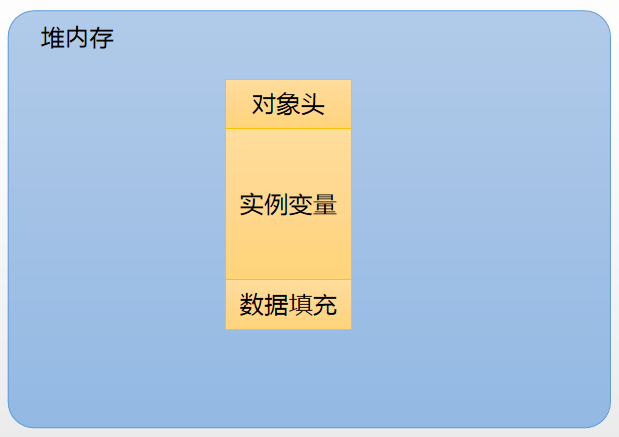
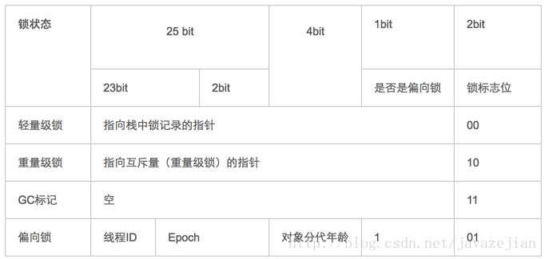
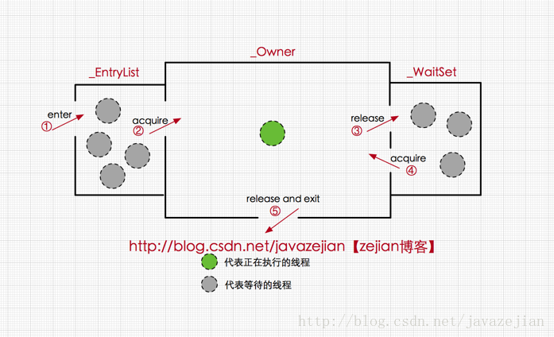
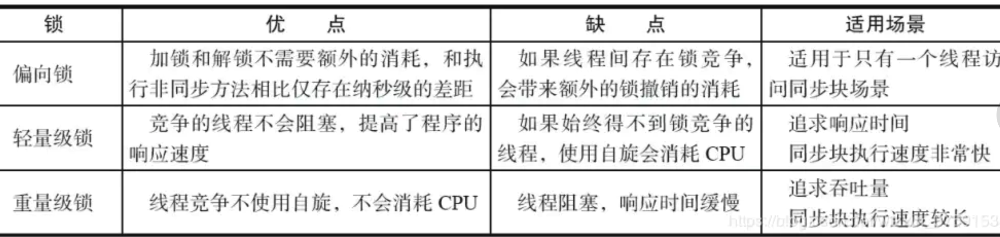

转载自深入理解Java并发之synchronized实现原理
线程安全是并发编程中的重要关注点，应该注意到的是，造成线程安全问题的主要诱因有两点:
一是存在共享数据(也称临界资源)，二是存在多条线程共同操作共享数据。
因此为了解决这个问题，我们可能需要这样一个方案，当存在多个线程操作共享数据时，需要保证同一时刻有且只有一个线程在操作共享数据，其他线程必须等到该线程处理完数据后再进行，这种方式有个高尚的名称叫互斥锁，即能达到互斥访问目的的锁，也就是说当一个共享数据被当前正在访问的线程加上互斥锁后，在同一个时刻，其他线程只能处于等待的状态，直到当前线程处理完毕释放该锁。
在 Java 中，关键字 synchronized可以保证在同一个时刻，只有一个线程可以执行某个方法或者某个代码块(主要是对方法或者代码块中存在共享数据的操作)，同时我们还应该注意到synchronized另外一个重要的作用，synchronized可保证一个线程的变化(主要是共享数据的变化)被其他线程所看到（保证可见性，完全可以替代Volatile功能），这点确实也是很重要的。
synchronized底层语义原理
Java 虚拟机中的同步(Synchronization)基于进入和退出管程(Monitor)对象实现， 无论是显式同步(有明确的 monitorenter 和 monitorexit 指令,即同步代码块)还是隐式同步都是如此。同步用的最多的地方可能是被 synchronized 修饰的同步方法。同步方法 并不是由 monitorenter 和 monitorexit 指令来实现同步的，而是由方法调用指令读取运行时常量池中方法的 ACC_SYNCHRONIZED 标志来隐式实现的，先来了解一个概念Java对象头，这对深入理解synchronized实现原理非常关键。
理解Java对象头与Monitor
在JVM中，对象在内存中的布局分为三块区域：对象头、实例数据和对齐填充。如下：

实例变量：存放类的属性数据信息，包括父类的属性信息，如果是数组的实例部分还包括数组的长度，这部分内存按4字节对齐。
填充数据：由于虚拟机要求对象起始地址必须是8字节的整数倍。填充数据不是必须存在的，仅仅是为了字节对齐，这点了解即可。
而对于顶部，则是Java对象头，它实现synchronized的锁对象的基础，这点我们重点分析它，一般而言，synchronized使用的锁对象是存储在Java对象头里的，jvm中采用2个字来存储对象头(如果对象是数组则会分配3个字，多出来的1个字记录的是数组长度)，其主要结构是由Mark Word 和 Class Metadata Address 组成，其结构说明如下表：
| 虚拟机位数 | 头对象结构 | 说明 |
|---|---|---|
| 32/64bit | Mark Word | 存储对象的hashCode、锁信息或分代年龄或GC标志等信息 |
| 32/64bit | Class Metadata Address | 类型指针指向对象的类元数据，JVM通过这个指针确定该对象是哪个类的实例。 |
其中Mark Word在默认情况下存储着对象的HashCode、分代年龄、锁标记位等
以下是32位JVM的Mark Word默认存储结构
| 锁状态 | 25bit | 4bit | 1bit是否是偏向锁 | 2bit 锁标志位 |
|---|---|---|---|---|
| 无锁状态 | 对象HashCode | 对象分代年龄 | 0 | 01 |
由于对象头的信息是与对象自身定义的数据没有关系的额外存储成本，因此考虑到JVM的空间效率，Mark Word 被设计成为一个非固定的数据结构，以便存储更多有效的数据，它会根据对象本身的状态复用自己的存储空间，如32位JVM下，除了上述列出的Mark Word默认存储结构外，还有如下可能变化的结构：

其中轻量级锁和偏向锁是Java 6 对 synchronized 锁进行优化后新增加的，重量级锁也就是通常说synchronized的对象锁，锁标识位为10，其中指针指向的是monitor对象（也称为管程或监视器锁）的起始地址。每个对象都存在着一个 monitor 与之关联，对象与其 monitor 之间的关系有存在多种实现方式，如monitor可以与对象一起创建销毁或当线程试图获取对象锁时自动生成，但当一个 monitor 被某个线程持有后，它便处于锁定状态。在Java虚拟机(HotSpot)中，monitor是由ObjectMonitor实现的，其主要数据结构如下（位于HotSpot虚拟机源码ObjectMonitor.hpp文件，C++实现的）
ObjectMonitor() {
_header = NULL;
_count = 0; //记录个数
_waiters = 0,
_recursions = 0;
_object = NULL;
_owner = NULL;
_WaitSet = NULL; //处于wait状态的线程，会被加入到_WaitSet
_WaitSetLock = 0 ;
_Responsible = NULL ;
_succ = NULL ;
_cxq = NULL ;
FreeNext = NULL ;
_EntryList = NULL ; //处于等待锁block状态的线程，会被加入到该列表
_SpinFreq = 0 ;
_SpinClock = 0 ;
OwnerIsThread = 0 ;
}
ObjectMonitor中有两个队列，_WaitSet 和 _EntryList，用来保存ObjectWaiter对象列表( 每个等待锁的线程都会被封装成ObjectWaiter对象)，_owner指向持有ObjectMonitor对象的线程
- 当多个线程同时访问一段同步代码时，首先会进入
_EntryList集合 - 当线程获取到对象的
monitor后进入_Owner区域并把monitor中的owner变量设置为当前线程同时monitor中的计数器count加1 - 若线程调用
wait()方法，将释放当前持有的monitor，owner变量恢复为null，count自减1，同时该线程进入WaitSet集合中等待被唤醒。若当前线程执行完毕也将释放monitor(锁)并复位变量的值，以便其他线程进入获取monitor(锁)。

monitor对象存在于每个Java对象的对象头中(存储的指针的指向)，synchronized锁便是通过这种方式获取锁的，也是为什么Java中任意对象可以作为锁的原因，同时也是notify/notifyAll/wait等方法存在于顶级对象Object中的原因
synchronized代码块底层原理
现在我们重新定义一个synchronized修饰的同步代码块，在代码块中操作共享变量i，如下
public class SyncCodeBlock {
public int i;
public void syncTask(){
//同步代码库
synchronized (this){
i++;
}
}
}
编译上述代码并使用javap反编译后得到字节码如下(这里我们省略一部分没有必要的信息)：
Classfile /Users/zejian/Downloads/Java8_Action/src/main/java/com/zejian/concurrencys/SyncCodeBlock.class
Last modified 2017-6-2; size 426 bytes
MD5 checksum c80bc322c87b312de760942820b4fed5
Compiled from "SyncCodeBlock.java"
public class com.zejian.concurrencys.SyncCodeBlock
minor version: 0
major version: 52
flags: ACC_PUBLIC, ACC_SUPER
Constant pool:
//........省略常量池中数据
//构造函数
public com.zejian.concurrencys.SyncCodeBlock();
descriptor: ()V
flags: ACC_PUBLIC
Code:
stack=1, locals=1, args_size=1
0: aload_0
1: invokespecial #1 // Method java/lang/Object."<init>":()V
4: return
LineNumberTable:
line 7: 0
//===========主要看看syncTask方法实现================
public void syncTask();
descriptor: ()V
flags: ACC_PUBLIC
Code:
stack=3, locals=3, args_size=1
0: aload_0
1: dup
2: astore_1
3: monitorenter //注意此处，进入同步方法
4: aload_0
5: dup
6: getfield #2 // Field i:I
9: iconst_1
10: iadd
11: putfield #2 // Field i:I
14: aload_1
15: monitorexit //注意此处，退出同步方法
16: goto 24
19: astore_2
20: aload_1
21: monitorexit //注意此处，退出同步方法
22: aload_2
23: athrow
24: return
Exception table:
//省略其他字节码.......
}
SourceFile: "SyncCodeBlock.java"
我们主要关注字节码中的如下代码
3: monitorenter //进入同步方法
//..........省略其他
15: monitorexit //退出同步方法
16: goto 24
//省略其他.......
21: monitorexit //退出同步方法
从字节码中可知同步语句块的实现使用的是monitorenter 和 monitorexit 指令，其中monitorenter指令指向同步代码块的开始位置，monitorexit指令则指明同步代码块的结束位置，当执行monitorenter指令时，当前线程将试图获取 objectref(即对象锁) 所对应的 monitor 的持有权，当 objectref 的 monitor 的进入计数器为 0，那线程可以成功取得 monitor，并将计数器值设置为 1，取锁成功。如果当前线程已经拥有 objectref 的 monitor 的持有权，那它可以重入这个 monitor (关于重入性稍后会分析)，重入时计数器的值也会加 1。倘若其他线程已经拥有 objectref 的 monitor 的所有权，那当前线程将被阻塞，直到正在执行线程执行完毕，即monitorexit指令被执行，执行线程将释放 monitor(锁)并设置计数器值为0 ，其他线程将有机会持有 monitor 。
值得注意的是编译器将会确保无论方法通过何种方式完成，方法中调用过的每条 monitorenter 指令都有执行其对应 monitorexit 指令，而无论这个方法是正常结束还是异常结束。为了保证在方法异常完成时 monitorenter 和 monitorexit 指令依然可以正确配对执行，编译器会自动产生一个异常处理器，这个异常处理器声明可处理所有的异常，它的目的就是用来执行 monitorexit 指令。从字节码中也可以看出多了一个monitorexit指令，它就是异常结束时被执行的释放monitor 的指令。
synchronized方法底层原理
方法级的同步是隐式，即无需通过字节码指令来控制的，它实现在方法调用和返回操作之中。JVM可以从方法常量池中的方法表结构(method_info Structure) 中的 ACC_SYNCHRONIZED 访问标志区分一个方法是否同步方法。当方法调用时，调用指令将会 检查方法的 ACC_SYNCHRONIZED 访问标志是否被设置，如果设置了，执行线程将先持有 monitor （虚拟机规范中用的是管程一词）， 然后再执行方法，最后再方法完成(无论是正常完成还是非正常完成)时释放 monitor 。在方法执行期间，执行线程持有了 monitor ，其他任何线程都无法再获得同一个 monitor 。如果一个同步方法执行期间抛 出了异常，并且在方法内部无法处理此异常，那这个同步方法所持有的 monitor 将在异常抛到同步方法之外时自动释放。下面我们看看字节码层面如何实现：
public class SyncMethod {
public int i;
public synchronized void syncTask(){
i++;
}
}
使用javap反编译后的字节码如下：
Classfile /Users/zejian/Downloads/Java8_Action/src/main/java/com/zejian/concurrencys/SyncMethod.class
Last modified 2017-6-2; size 308 bytes
MD5 checksum f34075a8c059ea65e4cc2fa610e0cd94
Compiled from "SyncMethod.java"
public class com.zejian.concurrencys.SyncMethod
minor version: 0
major version: 52
flags: ACC_PUBLIC, ACC_SUPER
Constant pool;
//省略没必要的字节码
//==================syncTask方法======================
public synchronized void syncTask();
descriptor: ()V
//方法标识ACC_PUBLIC代表public修饰，ACC_SYNCHRONIZED指明该方法为同步方法
flags: ACC_PUBLIC, ACC_SYNCHRONIZED
Code:
stack=3, locals=1, args_size=1
0: aload_0
1: dup
2: getfield #2 // Field i:I
5: iconst_1
6: iadd
7: putfield #2 // Field i:I
10: return
LineNumberTable:
line 12: 0
line 13: 10
}
SourceFile: "SyncMethod.java"
从字节码中可以看出，synchronized修饰的方法并没有monitorenter指令和monitorexit指令，取得代之的确实是ACC_SYNCHRONIZED标识，该标识指明了该方法是一个同步方法，JVM通过该ACC_SYNCHRONIZED访问标志来辨别一个方法是否声明为同步方法，从而执行相应的同步调用。这便是synchronized锁在同步代码块和同步方法上实现的基本原理。
同时我们还必须注意到的是在Java早期版本中，synchronized属于重量级锁，效率低下，因为监视器锁（monitor）是依赖于底层的操作系统的Mutex Lock来实现的，而操作系统实现线程之间的切换时需要从用户态转换到核心态，这个状态之间的转换需要相对比较长的时间，时间成本相对较高，这也是为什么早期的synchronized效率低的原因。庆幸的是在Java 6之后Java官方对从JVM层面对synchronized较大优化，所以现在的synchronized锁效率也优化得很不错了，Java 6之后，为了减少获得锁和释放锁所带来的性能消耗，引入了轻量级锁和偏向锁，接下来我们将简单了解一下Java官方在JVM层面对synchronized锁的优化。
Java虚拟机对synchronized的优化
锁的状态总共有四种，无锁状态、偏向锁、轻量级锁和重量级锁。 随着锁的竞争，锁可以从偏向锁升级到轻量级锁，再升级的重量级锁，但是锁的升级是单向的，也就是说只能从低到高升级，不会出现锁的降级，下面我们将介绍偏向锁和轻量级锁以及JVM的其他优化手段，阐述Java虚拟机所提供的每个锁的核心优化思想，毕竟涉及到具体过程比较繁琐，如需了解详细过程可以查阅《深入理解Java虚拟机原理》。
偏向锁
偏向锁是Java 6之后加入的新锁，它是一种针对加锁操作的优化手段，经过研究发现，在大多数情况下，锁不仅不存在多线程竞争，而且总是由同一线程多次获得，因此为了减少同一线程获取锁(会涉及到一些CAS操作,耗时)的代价而引入偏向锁。偏向锁的核心思想是，如果一个线程获得了锁，那么锁就进入偏向模式，此时Mark Word 的结构也变为偏向锁结构，当这个线程再次请求锁时，无需再做任何同步操作，即获取锁的过程，这样就省去了大量有关锁申请的操作，从而也就提高了程序的性能。所以，对于没有锁竞争的场合，偏向锁有很好的优化效果。但对于锁竞争比较激烈的场合，偏向锁就失效了，因为这样场合极有可能每次申请锁的线程都是不相同的，需要注意的是，偏向锁失败后，并不会立即膨胀为重量级锁，而是先升级为轻量级锁。下面我们接着了解轻量级锁。
轻量级锁
倘若偏向锁失败，它还会尝试使用一种称为轻量级锁的优化手段(1.6之后加入的)，此时Mark Word 的结构也变为轻量级锁的结构。轻量级锁能够提升程序性能的依据是“对绝大部分的锁，在整个同步周期内都不存在竞争”，注意这是经验数据。需要了解的是，轻量级锁所适应的场景是线程交替执行同步块的场合，如果存在同一时间访问同一锁的场合，就会导致轻量级锁膨胀为重量级锁。
加锁过程
锁升级为轻量级锁之后，对象的 Mark word 也会进行相应的的变化。升级为轻量级锁的过程：
- 线程在自己的栈桢中创建锁记录 LockRecord。
- 将锁对象的对象头中的MarkWord复制到线程的刚刚创建的锁记录中。
- 将锁记录中的 Owner 指针指向锁对象。
- 将锁对象的对象头的 MarkWord替换为指向锁记录的指针。
通过自旋锁加锁
轻量级锁失败后，虚拟机为了避免线程真实地在操作系统层面挂起，还会进行一项称为自旋锁的优化手段。这是基于在大多数情况下，线程持有锁的时间都不会太长，如果直接挂起操作系统层面的线程可能会得不偿失，毕竟操作系统实现线程之间的切换时需要从用户态转换到核心态，这个状态之间的转换需要相对比较长的时间，时间成本相对较高，因此自旋锁会假设在不久将来，当前的线程可以获得锁，因此虚拟机会让当前想要获取锁的线程做几个空循环(这也是称为自旋的原因)，一般不会太久，可能是50个循环或100循环，在经过若干次循环后，如果得到锁，就顺利进入临界区。如果还不能获得锁，那就会将线程在操作系统层面挂起，这就是自旋锁的优化方式，这种方式确实也是可以提升效率的。最后没办法也就只能升级为重量级锁了。
轻量级锁在加锁过程中，用到了自旋锁所谓自旋，就是指当有另外一个线程来竞争锁时，这个线程会在原地循环等待，而不是把该线程给阻塞，直到那个获得锁的线程释放锁之后，这个线程就可以马上获得锁的。注意，锁在原地循环的时候，是会消耗 cpu 的，就相当于在执行一个啥也没有的 for 循环。所以，轻量级锁适用于那些同步代码块执行的很快的场景，这样，线程原地等待很短的时间就能够获得锁了。自旋锁的使用，其实也是有一定的概率背景，在大部分同步代码块执行的时间都是很短的。所以通过看似无异议的循环反而能提升锁的性能。但是自旋必要有一定的条件控制，否则如果一个线程执行同步代码块的时间很长，那么这个线程不断的循环反而会消耗 CPU 资源。默认情况下自旋的次数是 10 次，可以通过 preBlockSpin 来修改在 JDK1.6 之后，引入了自适应自旋锁，自适应意味着自旋的次数不是固定不变的，而是根据前一次在同一个锁上自旋的时间以及锁的拥有者的状态来决定。如果在同一个锁对象上，自旋等待刚刚成功获得过锁，并且持有锁的线程正在运行中，那么虚拟机就会认为这次自旋也是很有可能再次成功，进而它将允许自旋等待持续相对更长的时间。如果对于某个锁，自旋很少成功获得过，那在以后尝试获取这个锁时将可能省略掉自旋过程，直接阻塞线程，避免浪费处理器资源。
锁消除
消除锁是虚拟机另外一种锁的优化，这种优化更彻底，Java虚拟机在JIT编译时(可以简单理解为当某段代码即将第一次被执行时进行编译，又称即时编译)，通过对运行上下文的扫描，去除不可能存在共享资源竞争的锁，通过这种方式消除没有必要的锁，可以节省毫无意义的请求锁时间，如下StringBuffer的append是一个同步方法，但是在add方法中的StringBuffer属于一个局部变量，并且不会被其他线程所使用，因此StringBuffer不可能存在共享资源竞争的情景，JVM会自动将其锁消除。
/**
* Created by zejian on 2017/6/4.
* Blog : http://blog.csdn.net/javazejian [原文地址,请尊重原创]
* 消除StringBuffer同步锁
*/
public class StringBufferRemoveSync {
public void add(String str1, String str2) {
//StringBuffer是线程安全,由于sb只会在append方法中使用,不可能被其他线程引用
//因此sb属于不可能共享的资源,JVM会自动消除内部的锁
StringBuffer sb = new StringBuffer();
sb.append(str1).append(str2);
}
public static void main(String[] args) {
StringBufferRemoveSync rmsync = new StringBufferRemoveSync();
for (int i = 0; i < 10000000; i++) {
rmsync.add("abc", "123");
}
}
}
关于synchronized 可能需要了解的关键点
synchronized的可重入性
从互斥锁的设计上来说，当一个线程试图操作一个由其他线程持有的对象锁的临界资源时，将会处于阻塞状态，但当一个线程再次请求自己持有对象锁的临界资源时，这种情况属于重入锁，请求将会成功，在java中synchronized是基于原子性的内部锁机制，是可重入的，因此在一个线程调用synchronized方法的同时在其方法体内部调用该对象另一个synchronized方法，也就是说一个线程得到一个对象锁后再次请求该对象锁，是允许的，这就是synchronized的可重入性。如下：
public class AccountingSync implements Runnable{
static AccountingSync instance=new AccountingSync();
static int i=0;
static int j=0;
@Override
public void run() {
for(int j=0;j<1000000;j++){
//this,当前实例对象锁
synchronized(this){
i++;
increase();//synchronized的可重入性
}
}
}
public synchronized void increase(){
j++;
}
public static void main(String[] args) throws InterruptedException {
Thread t1=new Thread(instance);
Thread t2=new Thread(instance);
t1.start();t2.start();
t1.join();t2.join();
System.out.println(i);
}
}
在获取当前实例对象锁后进入synchronized代码块执行同步代码，并在代码块中调用了当前实例对象的另外一个synchronized方法，再次请求当前实例锁时，将被允许，进而执行方法体代码，这就是重入锁最直接的体现，需要特别注意另外一种情况，当子类继承父类时，子类也是可以通过可重入锁调用父类的同步方法。注意由于synchronized是基于monitor实现的，因此每次重入，monitor中的计数器仍会加1。
三种锁的对比
